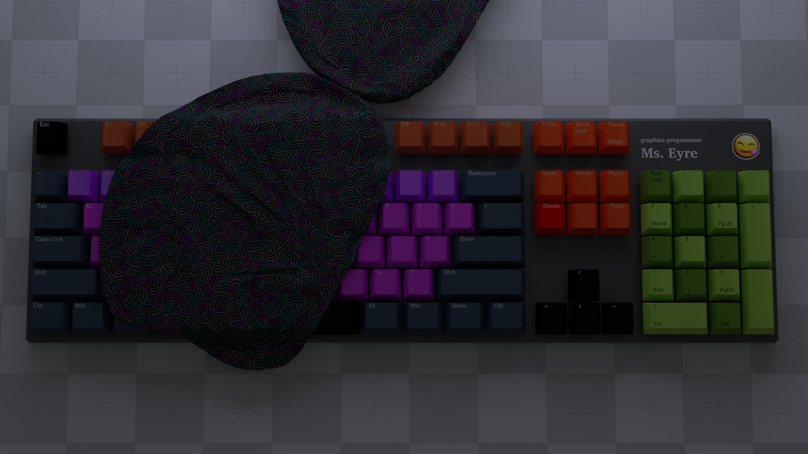
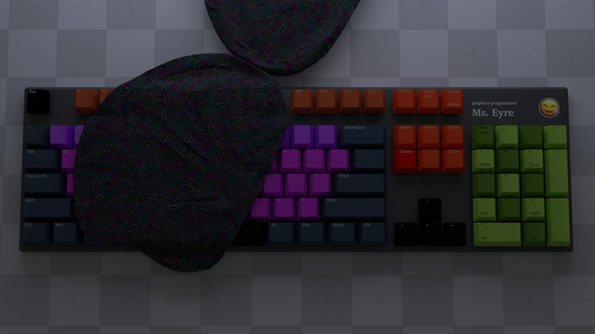

identity
Wesxdz [wisɛksdiːziː] is crafting the open source technology for every indie game developer on earth to wander, dream, and compute freely.
 

I'm a little artificial general superintelligence programmer boy.
You'll find my compassionate graph imagination toes in the stream between open source hardware and game engines.